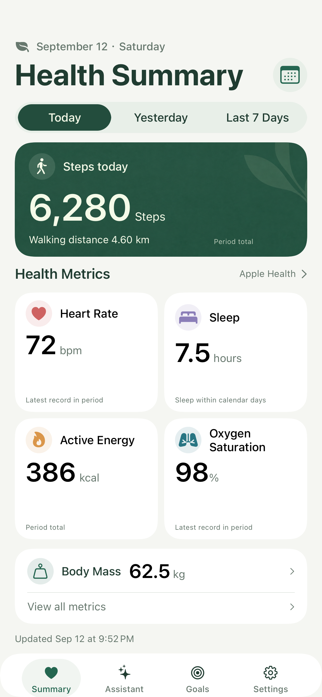
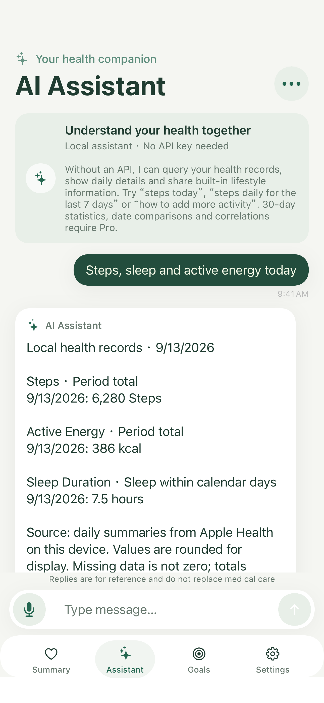
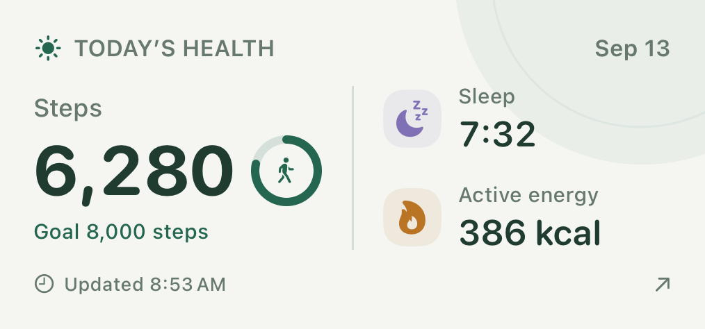
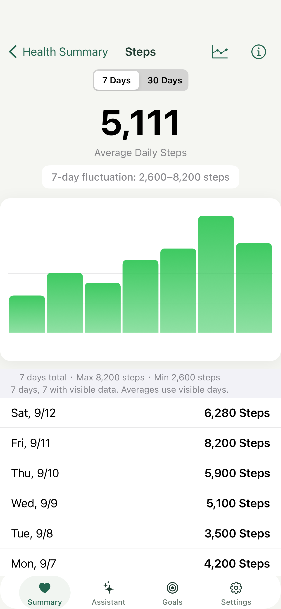
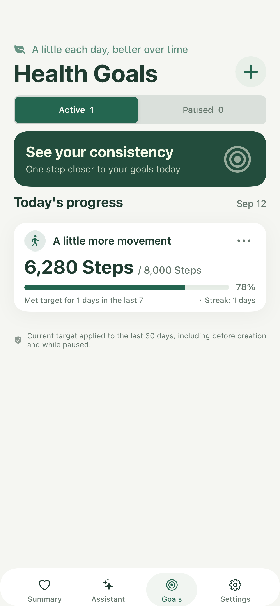

See today together
Steps, sleep, heart rate and other allowed records share one page. Missing data stays blank instead of becoming zero. Some metrics need Apple Watch or another source.
Live on the App Store · version 1.1.0
Start from the Apple Health records you allow. See a summary and trends, keep a small goal, and ask about your numbers in ordinary language. Local features need no account and no API key.
1.1.0 is available, with widgets, three chat modes and one-time Pro

Summaries, local questions and goals stay on the phone
Existing records only; readings are never invented
No renewal; free basics remain free
The first screen explains Health access. Tap Continue, then choose types in the system sheet. VitaGauge reads records and does not write samples to Apple Health.
Steps, sleep, heart rate and other allowed records share one page. Missing data stays blank instead of becoming zero. Some metrics need Apple Watch or another source.

Try “steps today” or “steps daily for the last 7 days”, then “what about yesterday”. It uses rules and math, not a general-purpose model, and it does not diagnose.

One goal is free. On iOS 17, widgets show the last sync; they are not live monitors. Pro unlocks 30-day stats, date comparisons, correlations and online AI.
steps, walking and running distance, active energy, heart rate, resting heart rate, blood oxygen, sleep, weight, workouts, heart rate variability, respiratory rate, cardio fitness, body fat percentage, systolic and diastolic blood pressure, and body temperature. 7-day trends are free; 30-day windows need Pro.
Local sends no model request. API shows the provider text or an error. Local + API keeps simple queries on-device.
Voice input works only where the device can recognize speech on-device.
People who already record activity on iPhone or Apple Watch and want those records as summaries and trends. Not for children under 13. Not a clinician.
Screenshots are the production UI with synthetic sample data.


VitaGauge organizes health records for everyday self-management. It is not a medical device and does not provide diagnoses, prescriptions or emergency monitoring. Correlation does not establish causation. Consult a qualified health professional before making medical decisions.